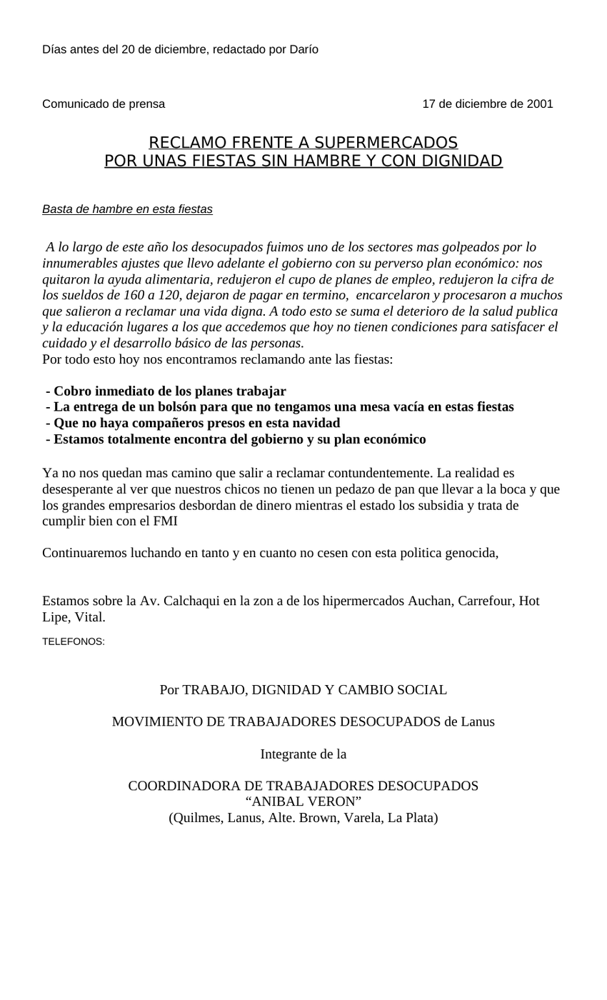

Primera hoja de dias antes del 20 de diciembre.doc. Clic en la imagen para abrir o descargar el archivo original.·20.5 KB·1 hoja

Días antes del 20 de diciembre, redactado por Darío
Comunicado de prensa 17 de diciembre de 2001
Basta de hambre en esta fiestas
A lo largo de este año los desocupados fuimos uno de los sectores mas golpeados por lo innumerables ajustes que llevo adelante el gobierno con su perverso plan económico: nos quitaron la ayuda alimentaria, redujeron el cupo de planes de empleo, redujeron la cifra de los sueldos de 160 a 120, dejaron de pagar en termino, encarcelaron y procesaron a muchos que salieron a reclamar una vida digna. A todo esto se suma el deterioro de la salud publica y la educación lugares a los que accedemos que hoy no tienen condiciones para satisfacer el cuidado y el desarrollo básico de las personas.
Por todo esto hoy nos encontramos reclamando ante las fiestas:
- Cobro inmediato de los planes trabajar
- La entrega de un bolsón para que no tengamos una mesa vacía en estas fiestas
- Que no haya compañeros presos en esta navidad
- Estamos totalmente encontra del gobierno y su plan económico
Ya no nos quedan mas camino que salir a reclamar contundentemente. La realidad es desesperante al ver que nuestros chicos no tienen un pedazo de pan que llevar a la boca y que los grandes empresarios desbordan de dinero mientras el estado los subsidia y trata de cumplir bien con el FMI
Continuaremos luchando en tanto y en cuanto no cesen con esta politica genocida,
Estamos sobre la Av. Calchaqui en la zon a de los hipermercados Auchan, Carrefour, Hot Lipe, Vital.
Por TRABAJO, DIGNIDAD Y CAMBIO SOCIAL
MOVIMIENTO DE TRABAJADORES DESOCUPADOS de Lanus
Integrante de la
(Quilmes, Lanus, Alte. Brown, Varela, La Plata)
Transcripción del documento original dias antes del 20 de diciembre.doc. Se conserva la ortografía del original.